Portfolio
Expérience professionnelle
Studios de jeu de société
Stage - Game developper - Repos Production
J'ai effectué un stage de 3 mois en tant que Game developper au sein de Repos Production a Bruxelles.
J'ai participé au développement de multiples nouvelles sorties, en animant de nombreuses session de playtests et en travaillant sur l'équilibrage et la création de mécaniques de jeu.
J'ai également pris part a des missions d'analyse de gamme et de marketing.
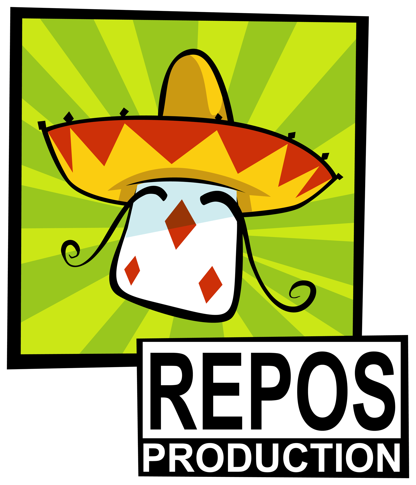
Stage - Marketing et suivi de chefferie de projet - Libellud
J'ai réalisé un stage de 2 mois au sein du studio de jeu Libellud.
Ma mission principale au cours de ce stage à été la réalisation d'un plan Marketing pour la sortie du Jeu Mysterium Refresh à l'occasion des 10 ans du jeu original.
En plus de cette mission, j'ai pu observer et participer à d'autres taches telles que du suivi de chefferie de projet, de la vérification de livrables ainsi que du playtesting et game-design de prototypes.
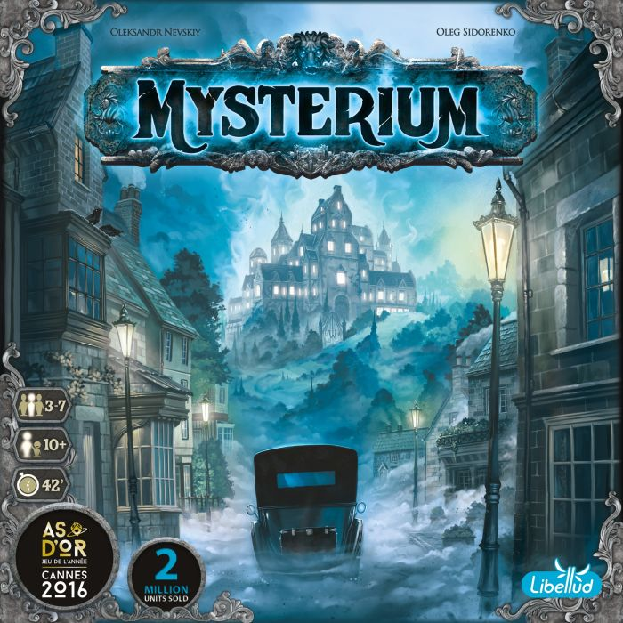
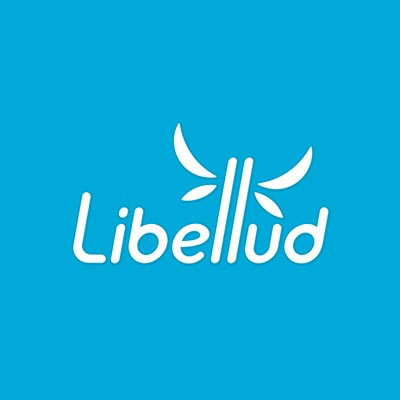
Développement informatique
Alternance Capgemini - TMA CNSA
J'ai réalisé ma 3ème année de BUT en alternance chez l'entreprise Capgemini.
Au cours de cette alternance, j'ai rejoint le projet CNSA TMA qui consiste en de l'optimisation et du maintien d'applications déjà existantes.
L'équipe au sein de ce projet étant franco-espagnol, j'ai beaucoup pratiqué l'anglais pour communiquer au quotidien avec mes collègues.
J'ai pu au cours de ce projet développer mes compétences de codage en Java ainsi que mes compétences management dans le cadre de l'organisation des tâches au cours de sprints en méthode agile.
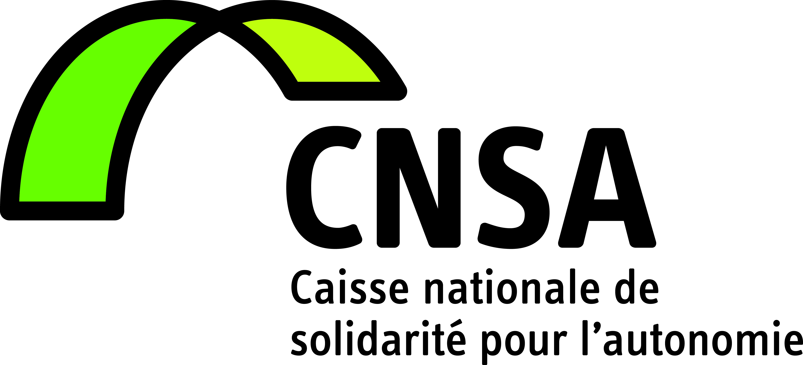
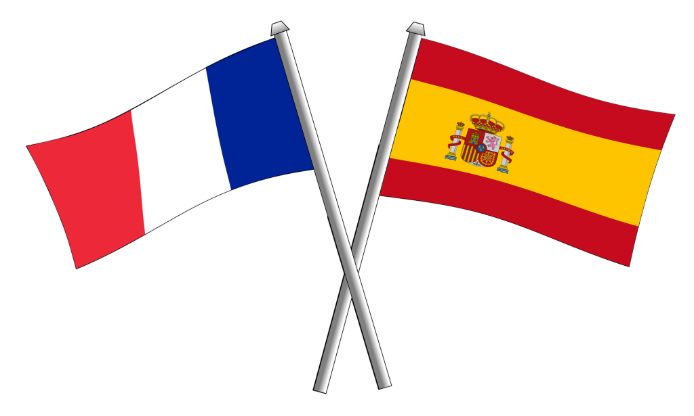
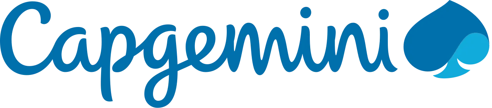
Stage - Marketing et suivi de chefferie de projet - Libellud
Dans le cadre de mon BUT Informatique, j'ai réalisé un stage de 3 mois au sein de l'entreprise Broadpeak avec comme missions l'automatisation et la conteneurisation de tests.
Ce stage m'a permis de développer mes connaissances des technologies Docker et Jenkins.
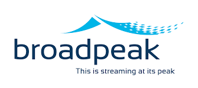
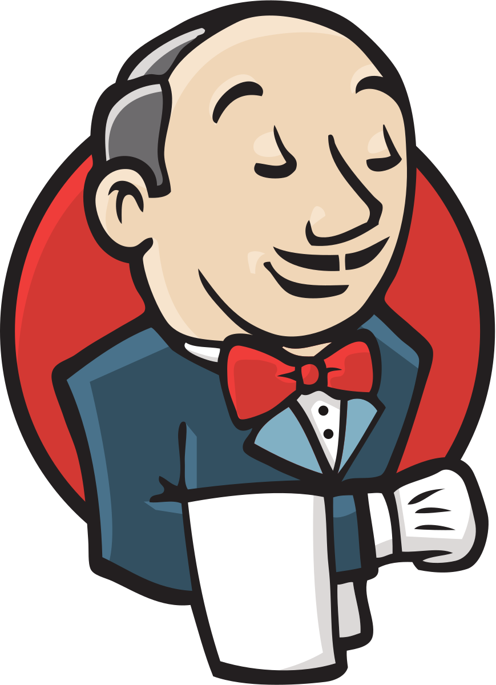
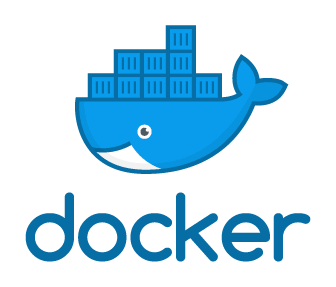
Projets réalisés
Développement d'un jeu Unity : Naughtilus
Projet réalisé dans le cadre de mes études en master MJPL, en équipe de 4. Le projet consiste en la réalisation d'un jeu Unity, et de la réalisation d'un plan Marketing et Financement pour le bon fonctionnement de la sortie (fictive) du jeu.
Ce projet m'a permis de m'initier à Unity et de travailler sur la réalisation d'un budget prévisionnel, ainsi que d'un plan de financement basé sur un Crowdfunding.
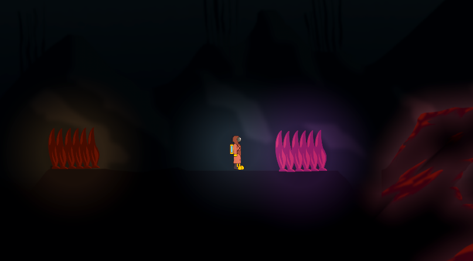
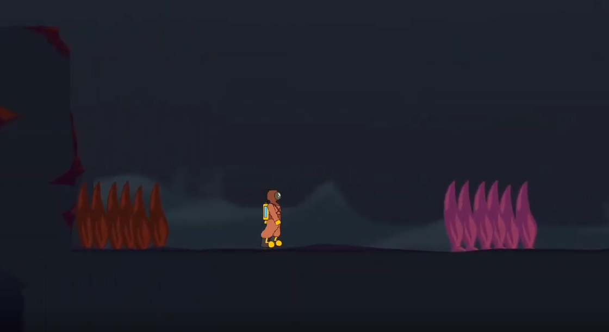
Développement d'un jeu de société : As Eikrom Wills It
Projet réalisé au cours de mes études en BUT: réalisation d'un jeu de société en anglais.
J'ai essayé de réaliser un jeu alliant des mécaniques d'élimination, de rôles cachés et de deck building, qui sont des mécaniques que j'apprécie beaucoup.
Les joueurs incarnent des cultistes essayant de réveiller le dieu ancien Eikrom, cependant, un paladin s'est secrètement infiltré dans la secte et essaye d'éliminer les autres joueurs avant qu'ils ne puissent compléter leur rituel.
Le jeu possède des règles complètes en anglais ainsi que de multiples concepts de cartes. Il est dans un état prototype, mais avec un manque de tests et de re-balancing pour être complété.
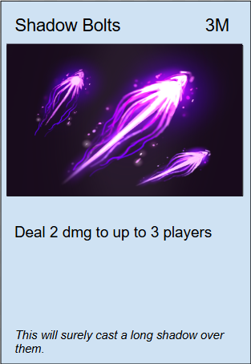
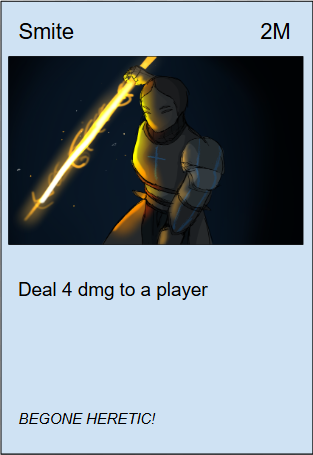
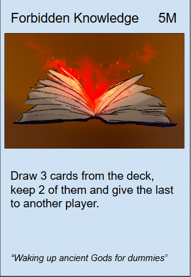
Développement d'un jeu de Yams en C
Ce projet à été réalisé dans le cadre de mes études en BUT Informatique. Le projet consistait en la création d'un cahier des charges à partir d'une demande client, puis au codage d'un jeu de Yams en langage C, exécutable sur un terminal de commande.
La réalisation de ce projet m'a permis d'améliorer mon travail en autonomie et le respect de dates butoirs d'avancement d'un projet.
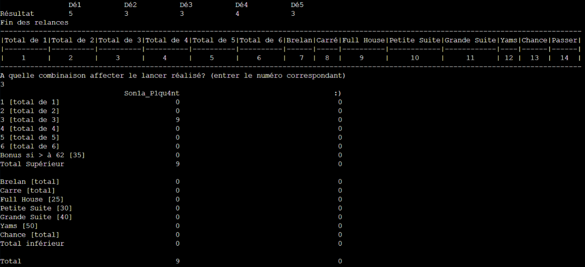
Création d'un site Internet pour un client | KOH FRAIS
Ce projet à été réalisé dans le cadre de mes études en BUT Informatique. Ce projet à été réalisé en quadrinôme. Le but du projet était de, à partir d'une interview, créer une maquette puis coder un site internet pour une entreprise de glacier nommée KOH FRAIS.
La réalisation de ce projet m'a permis de faire grandement travailler mes capacités d'imagination et de design, ainsi que d'apprendre à travailler et à répartir efficacement le travail au sein d'une équipe.
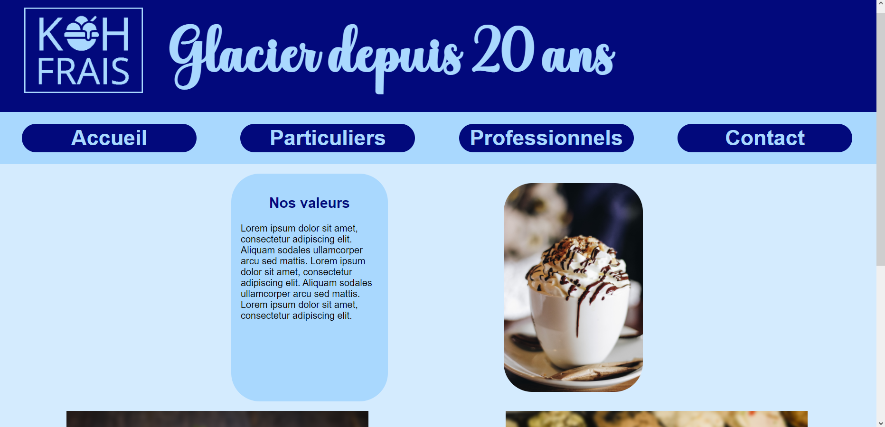